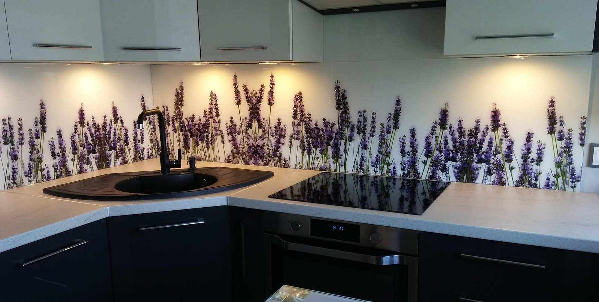
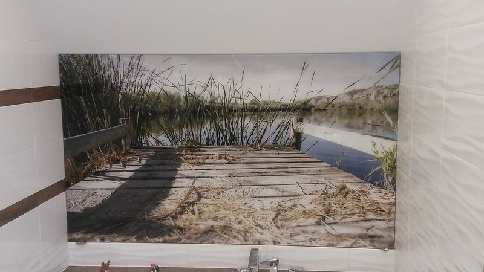
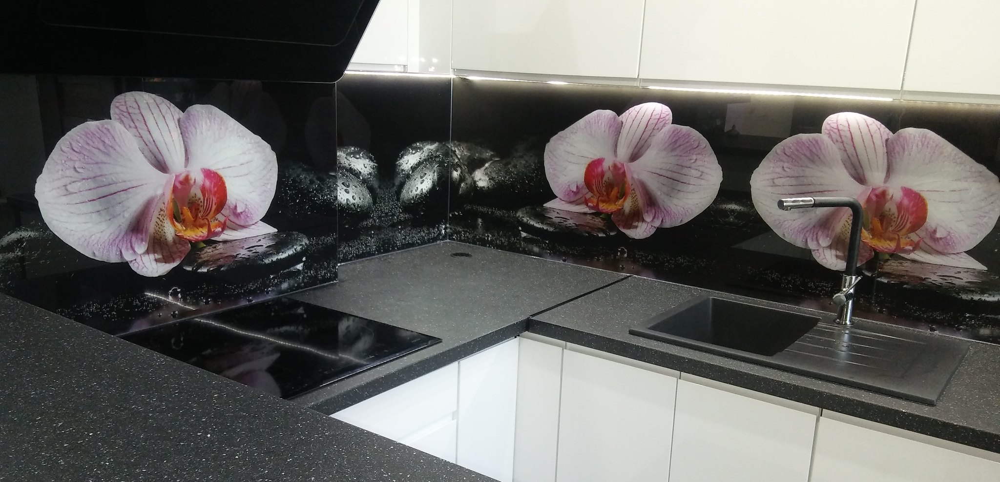

GERA Kutno - Profesjonalna obróbka szkła
Jesteśmy firmą z wieloletnim doświadczeniem w branży szklarskiej. Specjalizujemy się w kompleksowej obróbce szkła i montażu wyrobów szklanych.
Oferujemy:
- Oszklone kabiny prysznicowe
- Lustra łazienkowe
- Witryny szklane
- Szyby do kuchni
- Wiaty szklane
Nasze realizacje
Zaufali nam
Galeria Kutno
Hotel Rondo
Aquapark Kutno
Urząd Miasta Kutno